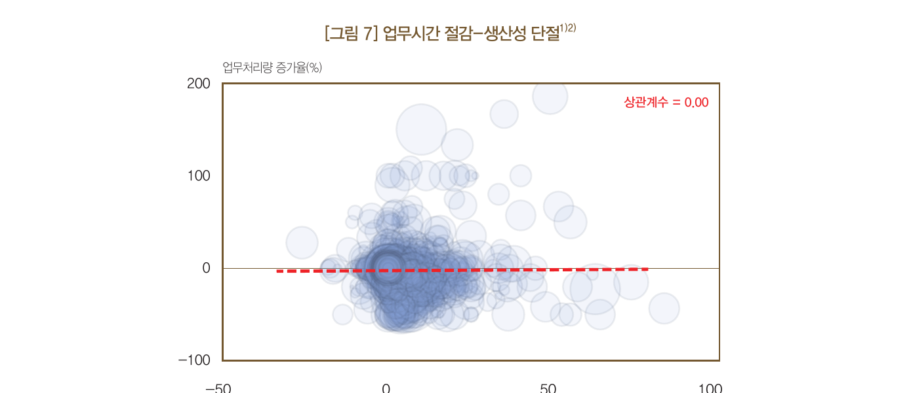
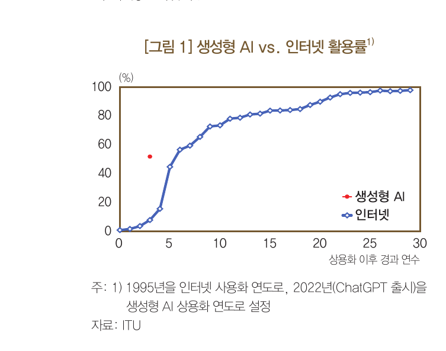
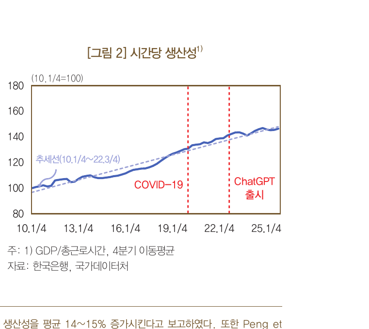
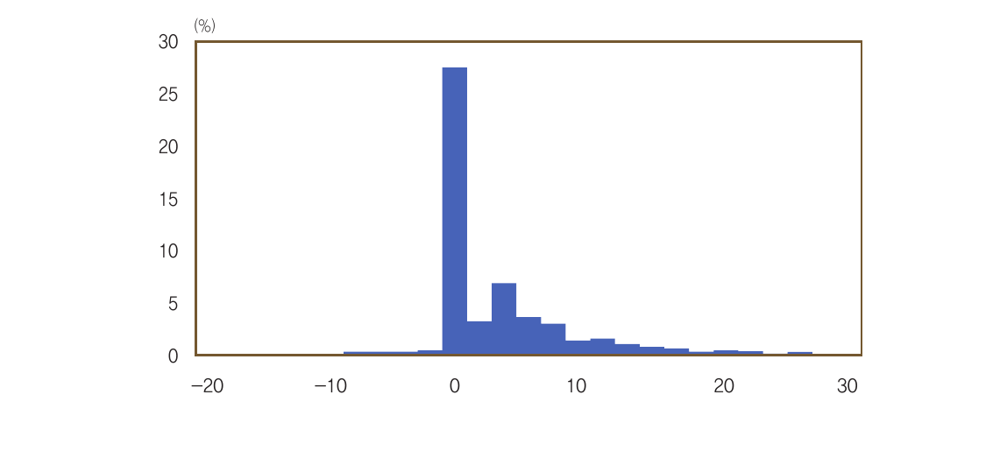
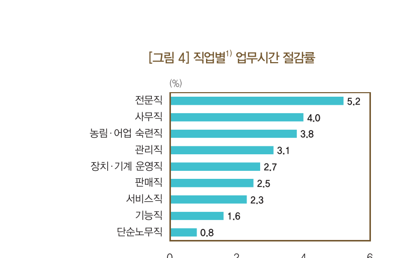
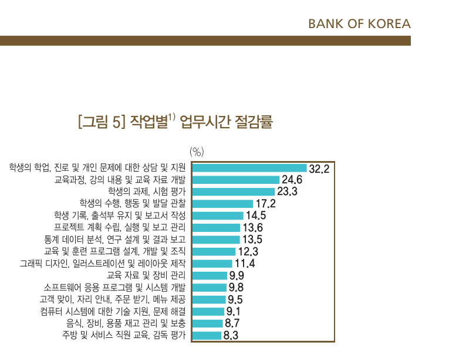
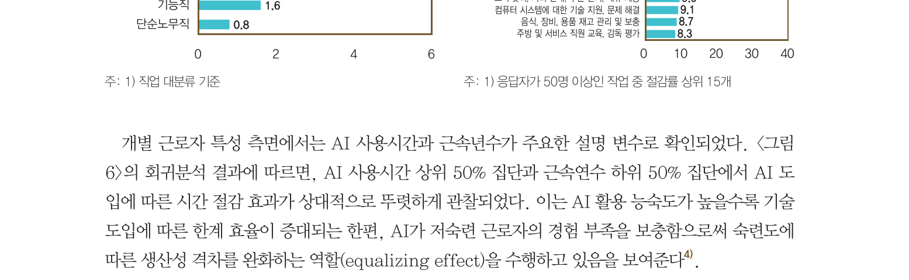
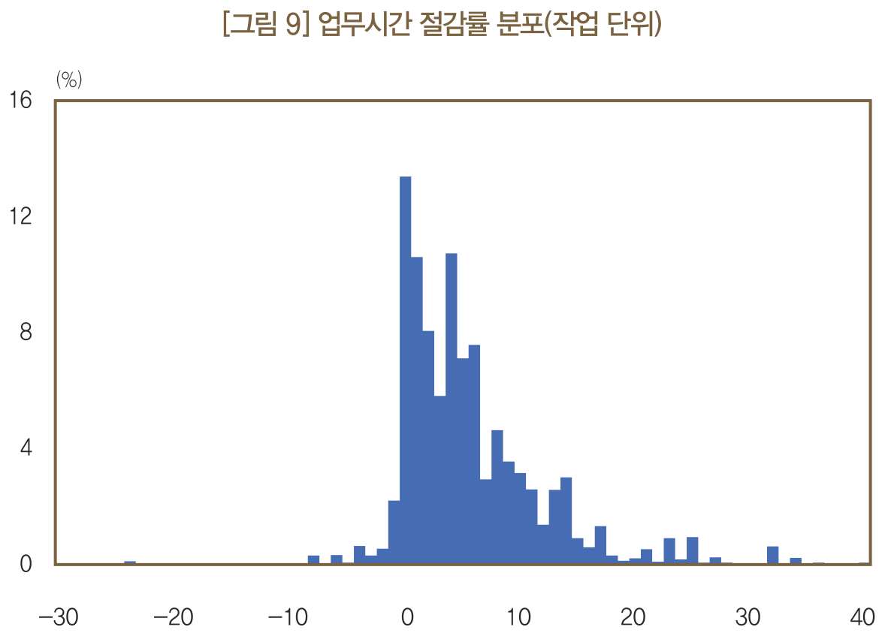
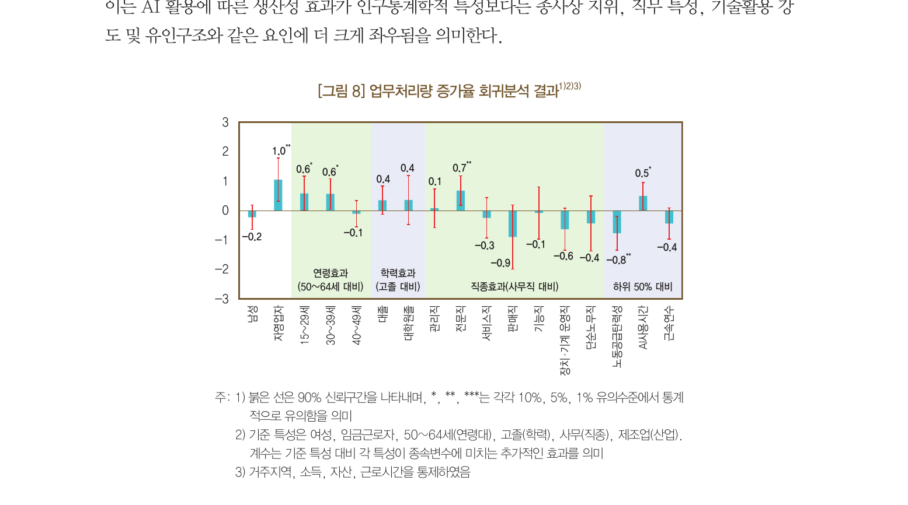
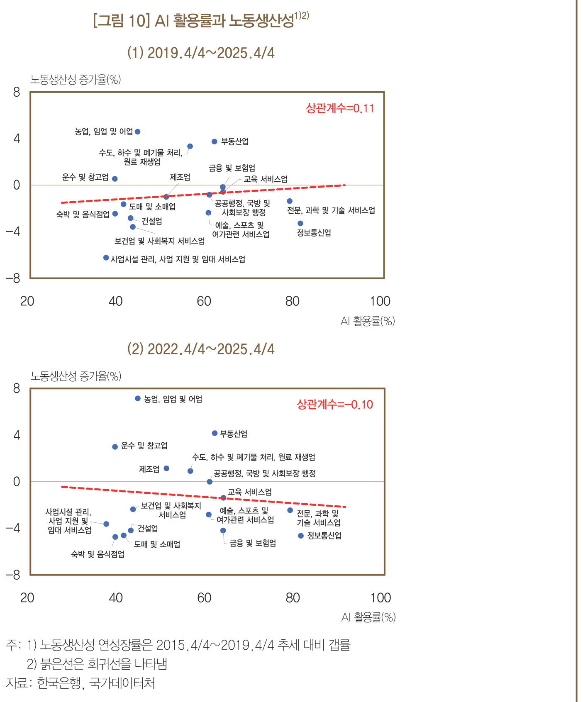

한국은행이 취업자 5,512명을 조사했습니다. 생성형 AI는 업무시간을 평균 3.8%, 주당 약 1.5시간 줄였습니다.
그러나 줄어든 시간과 실제 생산 증가의 상관계수는 0이었습니다. 효율은 올랐지만 성과로 이어지지 않는 '생산성 단절'입니다.
예외는 자영업자, 전문직, 청년층, 고강도 사용자였습니다. 공통점은 업무 자율성과 성과 유인입니다. 격차는 도구가 아니라 일하는 방식에서 갈립니다.
AI가 업무시간을 3.8% 줄였습니다.
그런데 그 시간은 성과가 됐습니까, 아니면 그냥 사라졌습니까?
중앙은행이 AI 생산성을 직접 측정했습니다. 한국은행 조사국이 2025년 5~6월 전국 취업자 5,512명을 조사했습니다. 설문이 아니라 가계조사 방식으로 업무시간과 생산량을 함께 물었습니다.
결과는 기대와 달랐습니다. AI는 분명히 시간을 아껴줬습니다. 그런데 아낀 시간이 더 많은 생산으로 바뀌지 않았습니다. 두 변수의 상관계수는 0이었습니다.
이 숫자는 경영 리더에게 불편한 질문을 던집니다. 우리 조직도 AI로 시간을 아끼고 있다고 믿습니다. 그 시간이 성과가 됐는지, 아니면 조용히 사라졌는지 측정해 본 적이 있습니까. 이 글은 그 격차가 어디서 생기고, 무엇으로 메우는지를 다룹니다.
생성형 AI 확산 속도는 인터넷의 약 8배입니다. 2025년 기준 국내 근로자의 51.8%가 업무에 AI를 씁니다. 도입은 끝난 논쟁입니다.
그런데 거시 생산성 지표는 조용합니다. 지난 3년간 시간당 생산성 추세에 의미 있는 변화가 없습니다. 도입은 빨랐지만 성과는 따라오지 않았습니다. 이 간극이 이번 분석의 출발점입니다.


첫째, AI는 분명히 시간을 줄입니다. AI를 쓰는 근로자의 업무시간은 평균 3.8% 줄었습니다. 주 40시간 기준 주당 약 1.5시간입니다. 이 시간이 전부 생산으로 바뀐다고 가정하면 잠재 생산성은 약 1.0% 올라갑니다. 작지 않은 수치입니다.
효과는 사람마다 달랐습니다. 다수는 변화가 작았고, 일부에서 큰 절감이 나타났습니다. 분포의 오른쪽 꼬리가 길게 늘어진 모습입니다.

직업별로는 전문직 5.2%, 사무직 4.0% 순으로 컸습니다. 서비스직, 기능직, 단순노무직은 작았습니다. 작업별로는 자료 개발, 통계 분석, 모델 설계, 소프트웨어 개발 같은 인지적 작업에서 효과가 두드러졌습니다.


AI는 숙련 격차도 줄였습니다. 회귀분석에서 AI 사용시간이 많고 근속연수가 짧은 집단에서 절감 효과가 더 컸습니다. AI가 저숙련 근로자의 경험 부족을 보완하는 '평준화 효과'입니다.

둘째, 그런데 그 시간이 생산으로 바뀌지 않았습니다. 같은 조사에서 업무처리량 변화를 함께 물었습니다. 시간 절감률과 처리량 증가율의 상관계수는 0이었습니다. 시간은 아꼈는데 산출은 그대로입니다. 이것이 보고서가 말하는 '생산성 단절'입니다.
해석은 이렇습니다. 절약된 시간이 더 가치 있는 일로 재배치되지 못했습니다. 업무 절차와 조직 구조가 그대로이기 때문입니다.
셋째, AI는 아직 '작업'에만 머물러 있습니다. 현재 AI는 업무 전체가 아니라 특정 작업 단위에만 선택적으로 쓰입니다. 작업 단위로 봐도 절감률이 20%를 넘는 작업은 4.4%에 불과합니다. 일부 작업만 빨라지고, 작업 사이의 연결과 순서는 그대로입니다.
생산성은 개별 작업의 속도가 아니라 작업을 잇는 업무 흐름에서 결정됩니다. 문서 작성이 빨라져도 그다음 승인과 회의가 그대로면, 아낀 시간은 산출이 아니라 대기시간으로 흡수됩니다.

넷째, 예외 집단이 정답을 알려줍니다. 모두가 단절에 갇힌 것은 아닙니다. 자영업자는 같은 시간 절감에 임금근로자보다 처리량을 1.0%p 더 늘렸습니다. 청년층은 0.6%p, 전문직은 0.7%p, AI 고강도 사용자는 0.5%p 더 늘렸습니다.
성별, 학력, 근속연수에 따른 차이는 통계적으로 유의하지 않았습니다. 즉 인구통계가 아니라 업무 자율성과 성과 유인이 갈림길이었습니다. 자기 일의 순서를 스스로 바꿀 수 있고, 더 만들면 더 가져가는 사람만 아낀 시간을 성과로 돌렸습니다.

다섯째, 기업 단위 변화는 아직 시작 전입니다. AI 활용률은 근로자가 51.8%인데 기업은 9.6%에 그칩니다. 확산이 개인 차원에서 일어나고, 조직 차원의 업무 흐름 변화로는 이어지지 않았다는 신호입니다. 산업별로 봐도 AI 활용률과 노동생산성 사이에 뚜렷한 관계가 없습니다.

그래서 일을 두 종류로 나눠야 합니다. 보고서의 결론은 단순합니다. 업무를 '표준화 업무'와 '열린 업무'로 구분하라는 것입니다. 표준화 업무는 결과와 평가 기준이 명확한 일입니다. 보고서 요약, 회계 처리, 규정 검토가 여기에 속합니다. 이 영역은 AI가 중심을 맡도록 업무 흐름 자체를 다시 짜야 합니다.
열린 업무는 결과의 형태가 미리 정해지지 않은 일입니다. 신규 사업 기획, 전략 수립, 복합 문제 해결이 여기에 속합니다. 이 영역에서 AI는 대체가 아니라 증강 도구입니다. 핵심은 AI가 넓혀준 선택지 가운데 무엇을 고르고 어떻게 통합하느냐는 사람의 역량입니다.
AI로 시간을 아낀 업무 3개를 적고, 그 시간이 무엇으로 바뀌었는지 추적합니다. 새 산출인가, 대기인가, 휴식인가. Claude 프롬프트: "이 업무에서 AI로 절약한 시간을 더 높은 가치의 일로 돌리는 방법 3가지를 제안해줘." (30분, A4 1장)
팀 업무 목록을 두 칸으로 분류합니다. 표준화 업무는 AI 중심으로 흐름을 다시 짤 후보입니다. Claude 프롬프트: "우리 팀 업무 목록을 표준화 업무와 열린 업무로 나누고, 각각 AI 활용 방식을 다르게 제안해줘." (1시간, 분류표 1장)
AI로 빨라진 작업 뒤에 남은 승인이나 회의 단계 1개를 줄입니다. 작업만 빠르고 흐름이 그대로면 성과는 늘지 않습니다. 한 번만 바꿔도 절감 시간이 산출로 흐르기 시작합니다. (준비 30분)
업무처리량은 자기보고 지표입니다. 생산량을 응답자가 스스로 보고했습니다. 측정 오차와 인식 편향이 있을 수 있습니다. 상관계수 0이라는 결론도 이 한계 위에서 읽어야 합니다.
'생산성 단절'은 끝이 아니라 과정입니다. 보고서는 이를 범용기술 도입 초기의 전형적 현상으로 봅니다. 인터넷과 전기도 같은 지연을 겪었습니다. 단절을 근거로 AI 투자를 미루면 전환기를 놓칩니다.
표준화 업무를 AI로 넘기면 학습 경로가 끊깁니다. 자료 정리와 기초 분석은 신입이 감각을 쌓던 통로였습니다. 단기 생산성을 위해 이 통로를 닫으면 열린 업무를 할 인재가 마르게 됩니다. 멘토링과 페어워크로 학습 기회를 다시 설계해야 합니다.
유인 없이 시간만 아끼면 성과는 사라집니다. 추가 성과에 보상이 없으면 근로자는 남는 시간을 생산에 쓸 이유가 없습니다. 한 연구에서는 AI가 시간당 품질을 높였지만 다수가 작업 시간을 줄였고 일부는 최종 품질까지 낮아졌습니다. 보상 구조를 먼저 손봐야 합니다.
AI는 효율 단계에 들어섰지만 생산성 단계로는 아직 넘어가지 못했습니다. 그 전환은 도구가 아니라 업무 흐름과 유인 설계에서 일어납니다.
생산성 단절 (Productivity Disconnect): 개별 작업의 효율은 올랐지만 그 효과가 전체 산출 증가로 이어지지 않는 현상입니다. 이번 분석에서는 업무시간 절감과 생산량 증가의 상관계수가 0으로 나타났습니다. 절약된 시간이 더 가치 있는 일로 재배치되지 못한 결과입니다.
잠재적 생산성과 실현된 생산성: 잠재적 생산성은 아낀 시간이 전부 생산으로 바뀐다고 가정했을 때의 향상분입니다. 이번 분석에서 약 1.0%로 추정됐습니다. 실현된 생산성은 실제로 산출이 늘어난 정도입니다. 둘 사이의 간격이 단절의 크기입니다.
솔로우 역설 (Solow Paradox): 새 기술은 도처에서 보이지만 생산성 통계에는 잡히지 않는 현상입니다. 경제학자 로버트 솔로우가 컴퓨터 시대에 지적했습니다. 범용기술 도입 초기에 흔히 나타나며, 조직과 제도가 따라붙은 뒤에야 생산성으로 전환됩니다.
표준화 업무와 열린 업무: 표준화 업무는 결과물과 평가 기준이 명확한 일입니다. 보고서 요약, 회계 처리, 규정 검토가 그 예입니다. 열린 업무는 결과의 형태가 미리 정해지지 않고 경험과 판단이 중요한 일입니다. 신규 사업 기획, 전략 수립이 그 예입니다. 두 유형에서 AI의 역할과 생산성 경로가 다릅니다.
- 서동현, 오삼일, 윤종원. (2026, June). AI 도입은 생산성을 높이는가? 초기 3년의 효과 분석 [Issue Note]. 한국은행 BOK 이슈노트 제2026-12호. (원문 보기 ↗)
- Pereira, E., Graylin, A. W., & Brynjolfsson, E. (2026). The enterprise AI playbook: Lessons from 51 successful deployments. Stanford Digital Economy Lab.
- Chen, Y. J., Gong, J., Li, J., & Zhao, Z. (2025). Better technology, worse motivation: GenAI's mediocrity trap [Working paper].